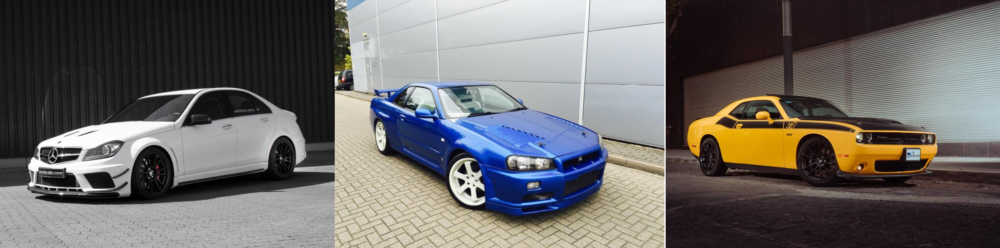

Historia
Desde hace muchos años los coches han estado evolucionando, las mismas necesidades han hecho que se modifiquen, pero no solo son las necesidades, sino también los gustos de cada persona han hecho que los coches sean más lujosos y rápidos a la vez. Es obvio que cuanto mas lujos su precio se cotiza mas, como por ejemplo ahora en la actualidad, empresas que tiene coches de lujo son: Mercedes Benz, Porche, BMW, Lexus y Acura...
Los precios de dichos coches sobrepasan cie mil euros facilmente, es difícil comprender como es que halla personas que puedan pagar ese precio, pero son empresas que ganan mucho dinero es mas que obvio que realizan estudios de mercado y cosas por el estilo
Ahora bien, también existe el mundo de las modificaciones el cual permite tener auténticas vestías con coches que no son ni tan lujoso ni tan rápidos y que pueden sorprender a más de un superdeportivo .
En esta web hablaremos de todo estos coches, pero nos centraremos principalmente en tres estilos diferentes que son El JDM, El GermanStyle y Los MuscleCars.
| Turbo | Supercharger | |
| JDM | Si | No |
| GermanStyle | Si | |
| MuscleCars | No | Si |
